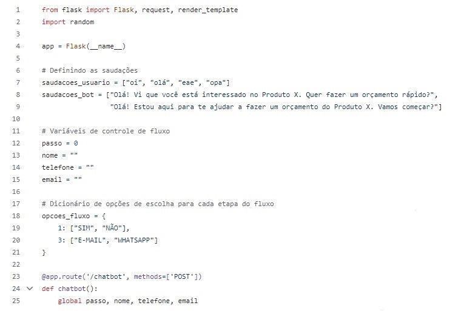

Chatbot
Os chatbots são softwares que se comunicam e interagem com usuários humanos por meio de mensagens automatizadas. Eles servem para as empresas conseguirem responder seus consumidores a qualquer momento, sem necessitar da presença de uma equipe de atendentes.
Os tipos de chatbot são: escudo(busca evitar problemas), proativo(considera gatilhos), social(promove engajamento nas redes sociais), otimizador(agiliza reservas de passagens, por exemplo) e conversação(dialoga com o cliente).
Grandes empresas, como Bradesco, Uber, Vivo, Sephora e Natura usam chatbots de IA para conduzir experiências conversacionais com seus clientes.
Exemplo de Código Básico:
